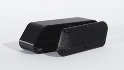
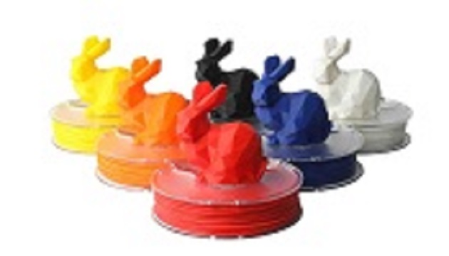
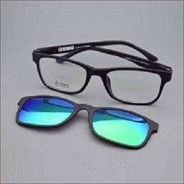

ABS
ABS este un material dur,care poate rezista la temperaturi extreme.
ABS nu este biodegradabil si se mincsoreza la conatctul cu aerul.
ABS este produs printr-un oroces numit emulsie,prin acelasi proces este produs si laptele.
Temperatura de printare este de 230ºC-260ºC.

PLA
PLA cunoscut ca si acid polilactic este un material biodegradabil.
PLA poate fi utilizat si in producerea de haine,tavi pentru microunde si in productia plasticului.
PLA este un material mai dificil de manipulat din cauza vitezei mari de racire si solidificare.
Temperatura de printare este de 190ºC-230ºC.

ULTEM
ULTEMul este un material din plastic caracterizat prin greutate redusa si elastcitate.
Rezista la temperaturi intre -30°-170°.
Acest material nu se decoloreaza la actiunea razelor UV.
Acesta este folosit la dispozitive medicale high-tech datorita proprietetilor termoplastice si electrice.